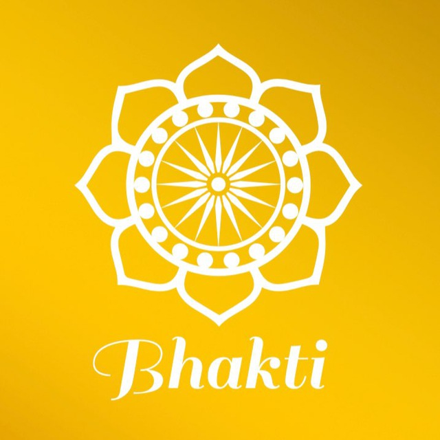
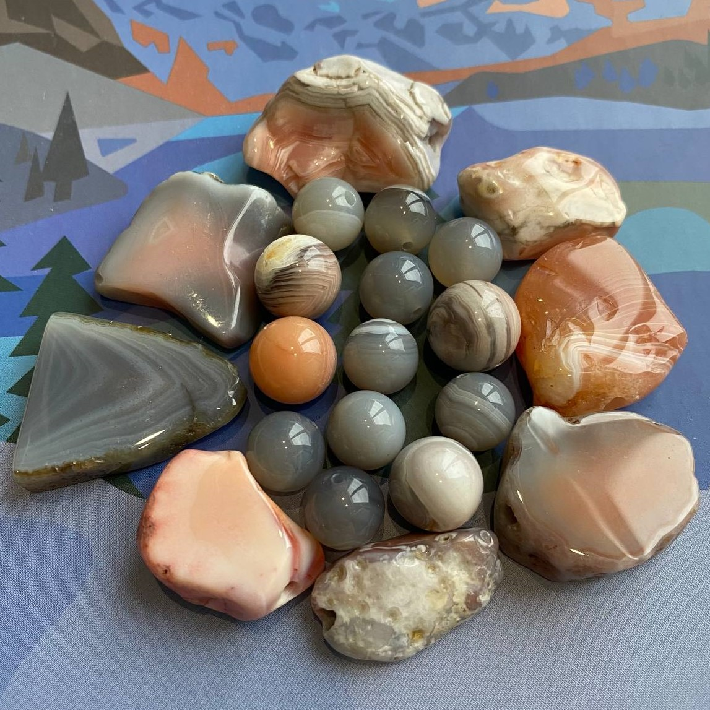
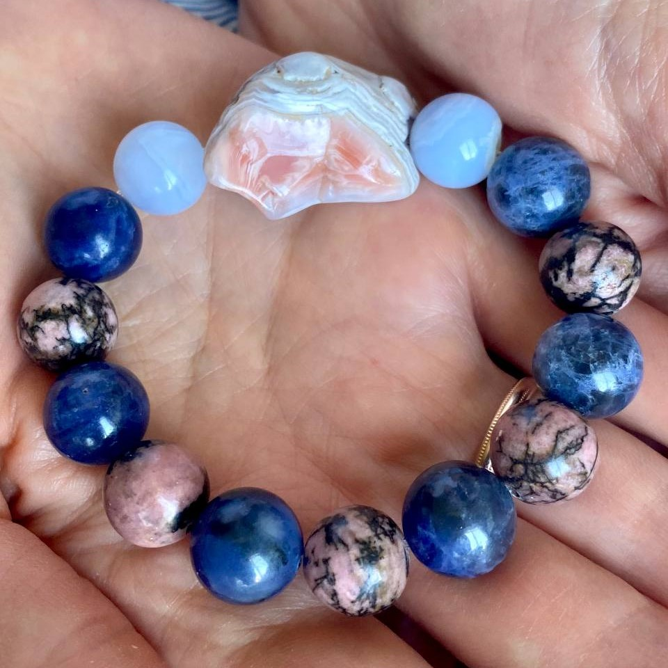
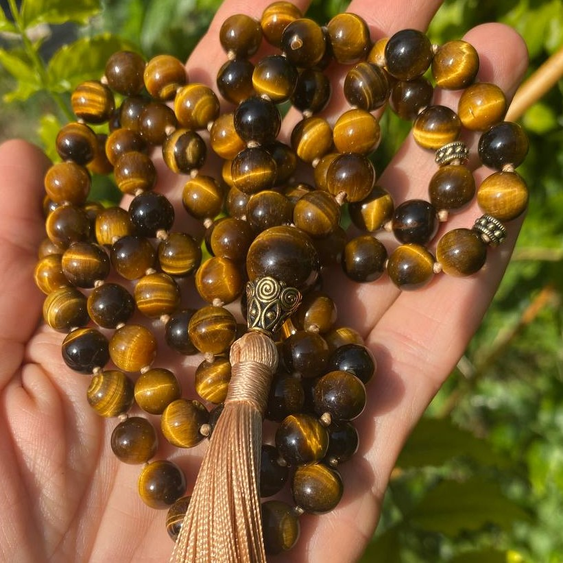
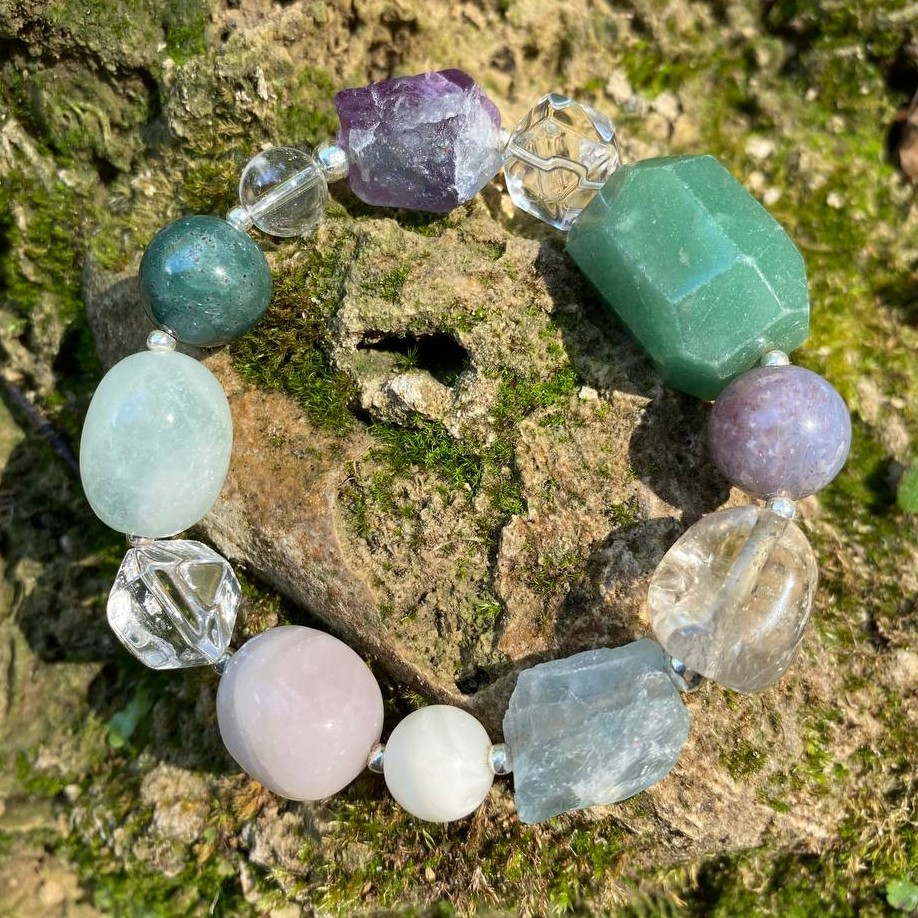
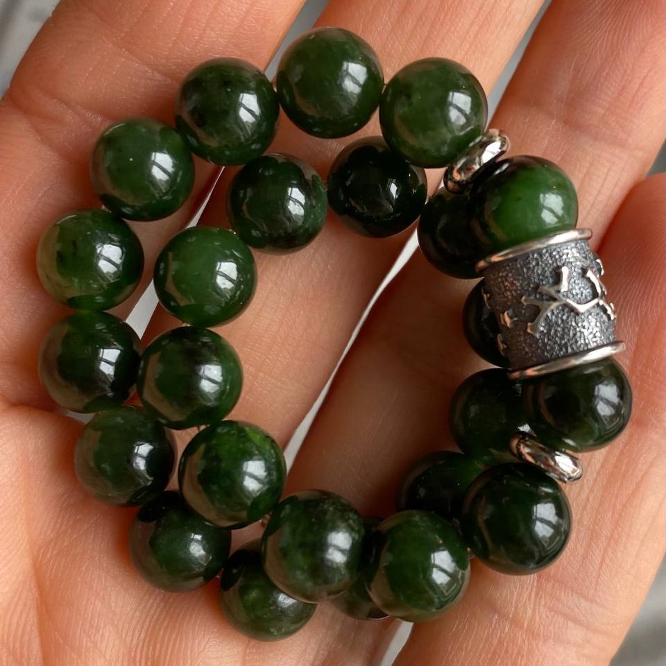
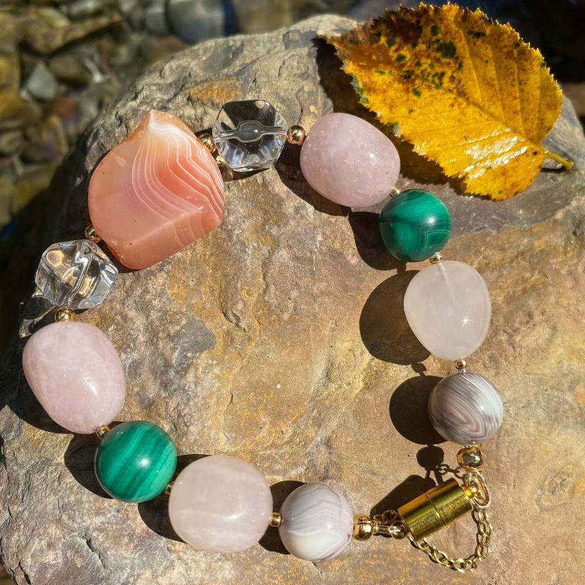
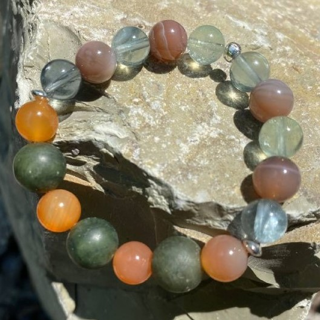

Индивидуальный подбор натуральных камней в Любви 💜
Создание инструментов
(мала, чётки, бусы, лула, браслеты-помощники)
для духовного развития и гармонизации энергий Души и тела.


Чем могут помочь натуральные камни?
- Снять напряжение, стресс, страхи, тревоги, уныние, депрессию;
- Oбрести радость, спокойствие, умиротворение;
- Избавить от вредных привычек и пристрастей;

- Улучшить ментальное и физическое здоровье;
- Сбалансировать мужские и женские энергии;
- Преодолеть гнев, агрессию и другие разрушительные эмоции;

- Проработать деструктивные программы;
- Подсветить причинно-следственные связи кармы,
способствовать духовному росту;

- Стабилизировать финансовый поток;
- Содействовать в обучении, усвоении новой информации,
развитии определённых навыков и умений;

- Гармонизировать отношения в семье, на работе, с миром;
- Мягко развить благостные качества: терпение, смирение, веру,
честность, самодисциплину.

- Смягчить и раскрыть сердце, усилить чувствительности к тонким энергиям;

- Выявить и раскрыть творческий потенциал, Божественные Дары,
помочь в их освоении и применении;